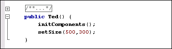
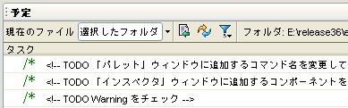
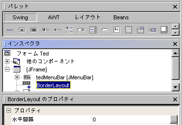

- コード折り畳み機能
ソースエディタに表示されるメソッドのボディ、コメント、インポート文などのコードのブロックを折り畳んで非表示にすることができます。
|
 |
- メソッドのオーバーライド
継承されたメソッドにはすべて、ソースエディタの左側の余白にマークが付きます。アイコンの上にマウスポインタを移動してしばらくすると、メソッドの継承元であるクラスまたはインタフェースが表示されます。
|
- 「予定」ウィンドウ
「予定」ウィンドウを使用すると、タスクおよび TODO コメントを簡単に追跡できます。1 ファイルまたは選択したディレクトリのすべてのタスクが表示されます。
|
 |
- 大括弧、小括弧、引用符の閉じる側の文字の自動挿入
大括弧、小括弧、引用符の閉じる側の文字が自動的に補完される機能がソースエディタに追加されました。たとえば、「System.out.println(」と入力すると、「)」が自動的に入力されます。
|
- フォームエディタの統合
フォームエディタがソースエディタのタブとして統合されました。「フォームエディタ」タブを選択すると、「GUI 編集」作業スペースに代わる「パレット」ウィンドウ、「インスペクタ」ウィンドウ、「プロパティ」ウィンドウが自動的に表示されます。
|
 |
- HTML 出力
任意の Java ファイルを形式化された HTML として出力し、Web 上で公開できます。
|
- エラー説明ツールチップ
任意のテキストの上にマウスポインタを移動してしばらくすると、そのテキストにコンパイルエラーが含まれている場合は、そのエラーがツールチップ形式で表示されます。
|
- ソースエディタでの分割表示
開いている任意のドキュメントのタブをソースエディタの左側または底部にドラッグ & ドロップすると、複数のドキュメントを一度に表示できます。
|